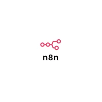
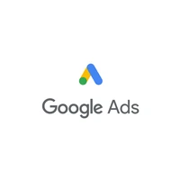

n8n Automation

Your Tools Already Talk to Each Other — They Just Need Someone to Wire It Up
Free Mind designs and builds n8n workflows connecting your CRM, WhatsApp, Google Workspace, and AI tools — so information moves between systems automatically instead of someone copy-pasting between tabs all day.

